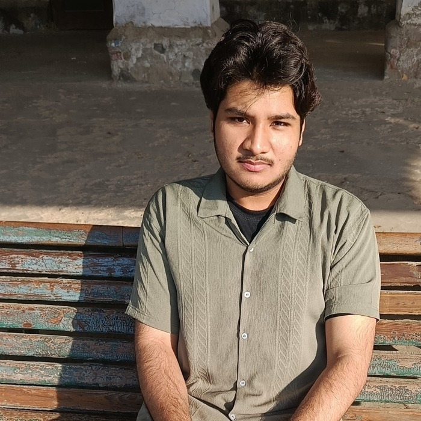

About me
Who I am, where I study, and what I'm working toward.

I'm a Computer Science student at the University of the Punjab (PUCIT), currently on the path to becoming a full-stack developer — I've already worked hands-on with React and frontend fundamentals, and I'm steadily building out my backend and database skills alongside it.
Alongside web development, I'm developing a real interest in information security: I've worked through Hack The Box rooms, picked apart DVWA's deliberately vulnerable app, and explored ethical hacking concepts as part of my coursework. I like understanding how the things I build can be broken, so I can build them better.
I'm also an aspiring AI developer — most of my personal projects tie together a few of these threads at once, whether that's turning an old console program into a modern OOP web app, or building tools that touch networking and data at the same time.
Education
BS Computer Science
Certifications
Coursework on structuring and refining prompts for large language models across practical use cases.
Core Python fundamentals: syntax, control flow, functions, and basic data structures.
OOP principles in Python applied to building graphical user interfaces.
Achievements
A few milestones along the way.
Electric Scooty Award
Awarded by the Prime Minister of Pakistan through the Engineering Development Board (EDB) — national-level recognition for high merit position and FSc marks.
2nd Position in City — FSc
Ranked 2nd in the city in FSc Pre-Engineering with 1116 marks out of 1100 (including bonus marks).
3rd Position in School — Matric
Ranked 3rd in school at the Matriculation level.